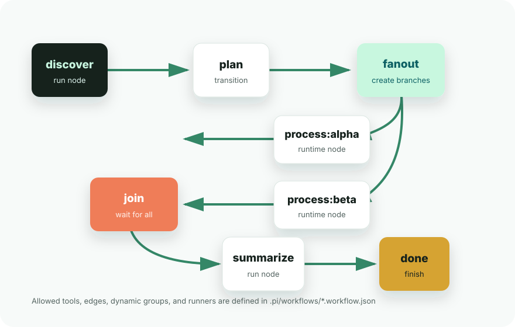

Global install
pi install npm:pi-langgraph-workflowPi extension for coding-agent sessions
pi-langgraph-workflow lets teams define strict JSON workflows for Pi, then guides the agent through explicit transitions, dynamic fan-out branches, joins, and node-specific runners.

How it works
The extension reads workflow definitions from .pi/workflows, stores session-scoped state, and
injects the active node into the agent prompt. Tool calls are checked against the current node before they run.
Create <name>.workflow.json with an entry node, finish nodes, allowed tools, and edges.
Run /workflow start <name>. The current node becomes part of the session state.
Use workflow_transition, workflow_fanout, and workflow_run_node to progress.
Install
pi install npm:pi-langgraph-workflowpi install -l npm:pi-langgraph-workflow/reloadCommands and tools
Loads .pi/workflows/<name>.workflow.json and places the session at the entry node.
Shows the active workflow, current node, available runtime nodes, and completed nodes.
Moves to an allowed next node and marks the previous node as completed.
Creates runtime nodes such as process_item:alpha and unlocks the join after all complete.
Runs the configured command for the current node with placeholder expansion.
Displays the static graph plus any runtime fan-out edges created in the session.
Example
The repository includes examples/simple.workflow.json. Copy it into a project, start it, run the
current node, then transition through planning, fan-out branches, join, summarize, and done.
.pi/workflows/.state*.json to .gitignore so session state does not land in commits.
mkdir -p .pi/workflows
cp examples/simple.workflow.json .pi/workflows/simple.workflow.json
/workflow start simple
workflow_run_node({
"node": "discover",
"runDir": "runs/simple-demo"
})
workflow_transition({
"target": "plan",
"reason": "discovery completed"
})Runner placeholders
{node} full node name
{template} node template before :
{item} dynamic branch item after :
{runDir} run directory passed to the tool
{cwd} current project directory